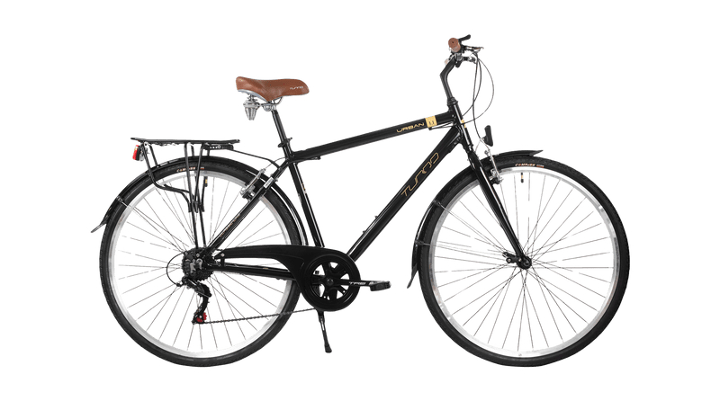
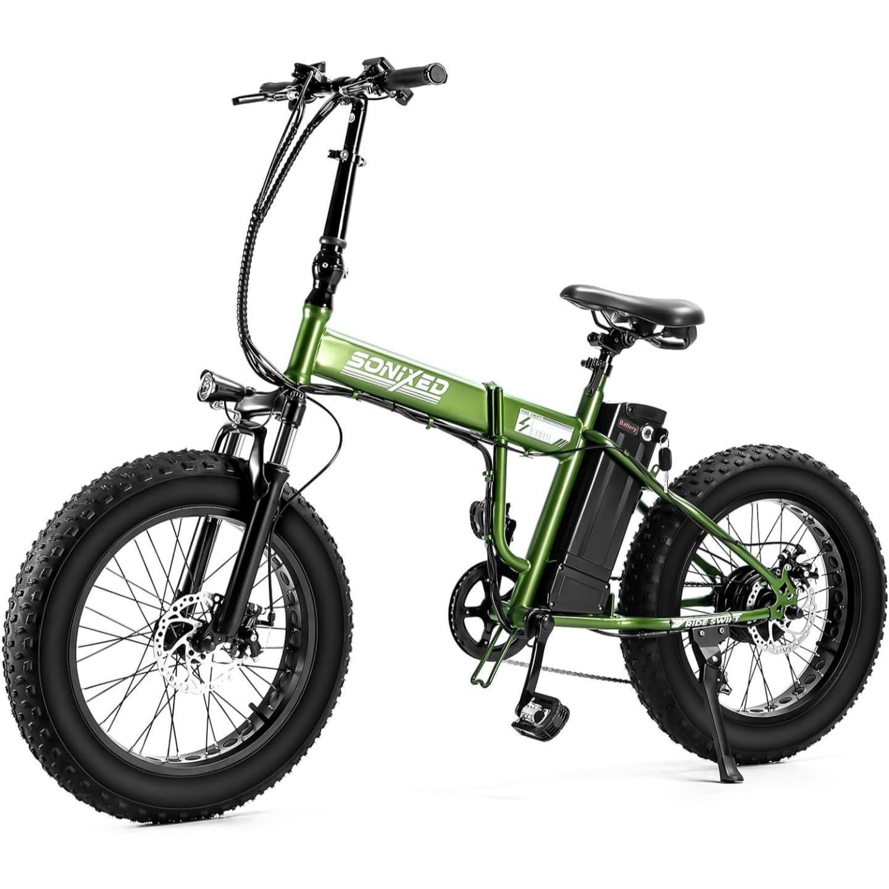

Muévete y descubre la ciudad
Alquilamos bicicletas y organizamos recorridos guiados por Medellín.
Alquiler de bicicletas
Explora Medellín a tu ritmo: alquila una bicicleta para recorrer la ciudad. Para consultar disponibilidad y hacer una reserva, escríbenos con la fecha de tu visita y la cantidad de bicicletas que necesitas. Te responderemos con las opciones y los detalles del alquiler.
-
Bicicleta urbana

Cómoda para pasear por la ciudad y recorrer trayectos tranquilos.
-
Bicicleta de montaña

Una opción para rutas con pendientes y terrenos variados.
-
Bicicleta eléctrica

La asistencia eléctrica ayuda a recorrer distancias largas y subir pendientes con menos esfuerzo.